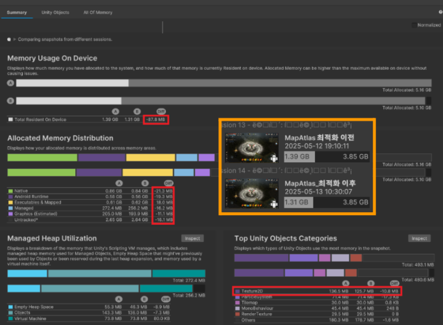

경력 기술

Project C
2025.09 - Ing
20년 전 DirectX 기반의 PC 원작을 유니티 엔진을 통해 현대적으로 재해석하고, 모바일 환경에 맞춰 새롭게 개발 중인 신규 3D MMORPG 프로젝트입니다.
맵 변환 파이프라인 구축
- DirectX 바이너리 맵 → Unity 자동 변환 툴 개발
- 수작업 배치 대비 작업 공수 약 90% 절감 달성
환경 오브젝트 최적화
- 단일 파티클 시스템 제어로 대규모 낙엽 연출 (DrawCall 최소화)
- Mesh와 Shader를 활용한 저비용 고효율 환경 생태계(나비/새) 구현
캐릭터 애니메이션 설계
- SubStateMachine와 BlendTree 기반의 상태 모듈화
- OverrideController 도입으로 다중 직업/장비 관리 효율화
- 맵 파이프라인
- 환경오브젝트 최적화
- 애니메이션 설계
맵 변환 파이프라인 (DirectX to Unity)

* 자체 바이너리 포맷(.cdm)을 유니티 Terrain으로 자동 변환하는 툴 예시
개발 목표
• 레거시 게임의 맵 데이터(.cdm)를 유니티 환경으로 완벽하게 이식
• 수작업이 불가능한 방대한 지형 및 수천 개의 오브젝트 배치 자동화
개발 기간
25.09.29 ~ 25.11.21 (8주)
개발 사항
① 이진 데이터(Binary) 역직렬화
- C++ 구조체로 패킹된 Header, HeightMap, TileIndex, ObjectInfo 파싱 필요
- C++(padding 포함)과 C# 간의 데이터 구조 차이 해결 필요
② 대규모 맵 최적화
- 통짜 지형 데이터를 런타임 성능을 고려하여 분할 생성해야 함
③ Terrain Textures
- 맵에서 텍스처 20개 이상 사용할 수 있어야 함
- 분할된 터레인에 대해서 Baching이 깨지지 않아야 함
구현 내용
① 바이너리 파싱 및 데이터 정규화
- BinaryReader와 Marshal을 사용하여 구조체 단위로 데이터 로드
- Short(-30,000 ~ 30,000) 범위의 높이 데이터를 Unity Terrain(0.0 ~ 1.0) 포맷에 맞춰 정규화(Normalization) 수행
② 지형 청크(Chunk) 시스템
- 전체 맵을 8x8(총 64개)의 작은 Terrain 타일로 자동 분할 생성
- Frustum Culling 효율을 높이고 LOD 관리가 용이하도록 구조화
③ Texture 2D Array 적용
- 폴더 내 모든 텍스처를 Texture2DArray로 병합하여 텍스처를 단일 Draw Call로 처리
어려웠던 점
이슈 : 레거시 포맷의 Padding 처리
- 문제 상황: C++ 구조체 정렬로 인해 생성된 더미 바이트로 인해 데이터 밀림 현상 발생
- 해결: br.ReadBytes()로 더미 데이터를 건너뛰거나, C# 구조체에 Placeholder 필드를 추가하여 오프셋을 정확히 맞춤
나비 (Vert Shader)

* Vertex Shader로 구현된 나비의 자연스러운 비행 (CPU 연산 0)
개발 목표
• 맵의 생동감을 부여하기 위한 환경 구축
• 모바일 환경에서도 부하가 없는 초경량 연출 시스템 구현
• 자연스러운 나비의 움직임
개발 기간
25.12.08 ~ 25.12.15 (일주일)
개발 사항
① 오브젝트의 중요도에 따른 배경 오브젝트의 리소스 제한
- 메인 캐릭터나 몬스터에 사용되는 Animator/SkinnedMesh 할당 불가
② 맵 전체에서 나비 밀도 유지
- 맵 곳곳에 나비가 있어야 하며, 성능에 영향을 끼치지 않아야 함
③ 데이터 기반 환경 제어
- 나비 생성 여부 및 종류를 쉽게 관리할 수 있어야 함
구현 내용
① Vertex Shader 애니메이션

* Flap Speed : 날개짓 속도
* Wing Intensity : 날개 강도

- sin 파동 함수를 응용하여 시간에 따라 Plane Mesh의 정점을 중심점으로부터 멀어질수록 더 강하게 이동시켜 날개짓 구현 (CPU 연산 0)
- ParticleSystem.Noise를 통해 나비의 불규칙하고 가벼운 이동 구현
② 플레이어 중심의 연출
- 플레이어 위치와 동기화하여, 적은 개체 수로도 플레이어 주변이 항상 꽉 차 보이도록 구현
- ParticleSystem.Simulation Space = World를 통해 플레이어가 움직여도 나비는 제자리에 있는 것처럼 보이게 함
③ 데이터 기반 환경 제어
- 맵 데이터(ScriptableObject)에 생성 여부, 종류, 최대 개수 등 파라미터화하여 기획자가 번들로 환경 제어할 수 있도록 구조화
나뭇잎 (Centralized Control)

* 중앙 제어 시스템으로 구현된 최적화된 낙엽 효과 (Draw Call 1회)
개발 목표
• 숲 환경에서 쾌적한 렌더링 성능 확보
• 다양한 종류의 나무 데이터를 효율적으로 관리하는 시스템 구축
개발 기간
25.12.16 ~ 25.12.19 (4일)
개발 사항
① 오브젝트의 중요도에 따른 배경 오브젝트의 성능 제한
- 각 나무에서 나뭇잎이 떨어지는 연출과 동시에 성능에 영향을 끼치지 않아야 함
② 데이터 관리 및 확장성
- 나무 종류에 따라 높이, 너비, 색상, 개수 등을 쉽게 관리할 수 있어야 함
구현 내용
① 중앙 제어 시스템 (Centralized Control)
- 플레이어 위치와 동기화하여 단 하나의 Particle System으로 나뭇잎 제어
- 주변 Tree Layer를 탐색한 뒤, 해당 나무 위치에서 Emit함수를 호출하여 수동으로 입자 방출
② 경량화 패턴 (SO)

- ScriptableObject에 높이/지름/색상/밀도 등 파라미터화하여 나무 종류에 따라 기획자가 번들로 제어할 수 있도록 구조화
- 각 나무 객체는 데이터가 아닌 LeafData의 참조 값만 가지도록 하여 메모리 사용량을 최소화하고 데이터 재사용성을 극대화
캐릭터 애니메이션 설계

* Sub-State Machine과 Override Controller를 활용한 모듈식 구조 설계 예시
개발 목표
• 3개의 클래스/직업군(50+)을 아우르는 애니메이션 로직 구축
• 각 변화 시작 모션을 가운데 BlendTree에 몰아넣음으로써 Transition 복잡도 감소 및 유지보수성 증가
• 기존 문자열 기반 호출 구조 유지하며 확장성 확보
개발 기간
26.01.05 ~ 26.01.09 (5일)
개발 사항
① 상태에 따른 기존 애니메이션 호출 구조 유지
- 상태 이름으로 호출하는 구조 유지
② 단일 레이어의 복잡도 증가 (Spaghetti State)
- Base Layer 안에 15개 이상의 상태가 혼재되어, Transition 연결 시 N:N의 복잡한 스파게티 구조
③ 방대한 직업군
- 3개 클래스(남/녀), 50여 개의 직업, 무기 4종 등 수백 가지 조합을 지원해야 하므로, 개별 FSM 제작 불가능 (Logic 재사용 필수)
- 모든 직업이 동일한 상태 구조를 가지도록 표준화 필요
구현 내용
① 계층적 상태 호출
- 기존에는 단순히 "MOVE" 호출했다면, 개선 후에는 현재 상태(비무장/무장/탑승 비무장/ 탑승 무장)를 조합하여 SubStateMachine.State (예: SM_무장.MOVE) 형태로 호출되도록 래핑 함수 구현
- 기존 코드의 수정 없이, 내부 로직만으로 정밀한 상태 제어 가능
② Sub-State Machine 모듈화
- 상태 그룹화: 비무장, 무장, 탑승 비무장, 탑승 무장 등 행동 양식에 따라 상태를 Sub-State Machine으로 그룹화
- 상위 레이어에서는 그룹 간의 진입만 관리하므로 Transition 복잡도 감소
③ Animator Override Controller
- 직업별로 Animation Clip만 교체하는 Override Controller 방식 적용
④ Blend Tree
- MoveSpeed 파라미터를 기준으로 Walk ↔ Run 모션과 속도를 선형 보간하여, 상태 전환 없이 자연스러운 가감속 표현.
어려웠던 점
이슈: Default State의 무한 재진입 현상
- 문제 상황 : 중분류 파라미터 값을 통해 Sub-State Machine에 진입한 상태에서 애니메이션 변경 함수 호출 시 Default State의 애니메이션이 재생
- 로직 개선 : Sub-StateMachine의 name을 포함하여 호출하도록 래핑 함수를 추가하여 제어

메틴: 파멸의 서곡
2024.05 - 2025.09 [출시]
PC 온라인 게임 '메틴' 시리즈의 IP를 계승하여 모바일 환경에 맞춰 새롭게 재탄생시킨 MMORPG 프로젝트입니다.
2024년 9월 유니티 엔진을 기반으로 정식 출시되어 안정적인 라이브 서비스를 이어가고 있습니다.
최적화
- LateBinding/메모리 중복 제거
- DrawCall 최적화
SDK
- Firebase-Auth/Messaging
- Adjust, AIHelp
빌드
- 자동화 프로세스 구축
- One, Galaxy, Play Store
- IOS XCode 빌드
콘텐츠
- 코스튬, 공성전, 월드 던전
- 해골 시스템, 칭호, 이벤트
- 1. 최적화 성과
- 2. SDK 연동
- 3. 빌드/배포
- 4. 콘텐츠
SpriteAtlas LateBinding
문제점
Bundle 사용 시, 이미지를 SpriteAtlas.asset이 아닌 Bundle에 포함된 SpriteAtlas에서 직접 참조하여 SpriteAtlas가 메모리에 중복 적재되는 문제를 발견했습니다.
문제 상황 : 게임 실행 직후 UICon, CashStore, SpriteAtlas 번들 다운로드 및 캐싱. (SpriteAtlas 15MB 적재)
- ex1) Inventory UI Open → UICon.asset에 포함된 SpriteAtlas 적재 (+15MB)
- ex2) 이어서 CashStore UI Open → CashStore.asset에 포함된 SpriteAtlas 적재 (+15MB)
이로 인해 SpriteAtlas에서만 총 45MB의 메모리가 중복 사용되었습니다.
개선 내용
① SpriteAtlas.asset에 포함될 .spriteatlas들의 Include Build = false; 로 수정했습니다.
*빌드 포함 여부
② 번들을 다운로드 하기 전에 SpriteAtlas 이벤트를 추가합니다.
*spriteAtlasManager.atlasRequested : 객체가 .spriteatlas를 참조하지만 찾지 못할 때 호출 이벤트
③ 번들 다운로드 받고 캐싱 후 타 번들이 .spriteAtlas를 찾지 못하도록 bundle.Unload(false)를 호출합니다.
결과
총 메모리 사용량 68.4MB → 11.9MB 로 최적화 (약 56.5MB 절감)
- UICon.asset 하나만 사용했음에도 Texture2D 메모리가 68MB 증가 (중복 적재 발생)
사용 기술
- SpriteAtlasManager.atlasRequested
- AssetBundle.Unload
- Unity SpriteAtlas Late Binding
SharedMap SpriteAtlas
문제점
- 각 맵마다 별도 Sprite 폴더 및 SpriteAtlas를 사용하고 있음에도, 실제 게임 실행 시 다른 맵의 SpriteAtlas가 참조되어 불필요한 중복 로딩이 발생했습니다.
- 맵 제작 시 여러 맵에서 사용되는 하나의 맵 프리팹 사용으로 인한 SpriteAtlas 중복 적재를 확인했습니다.
개선 내용
중복 방지 툴을 실행하여 공용으로 사용하는 Sprite들을 모아 SharedMap_SpriteAtlas.spriteatals를 제작하고, 각 맵 Prefab의 참조를 수정했습니다.
결과
Texture 메모리 사용량 25.2MB → 14.4MB (약 10.8MB 감소)
전체 메모리 사용량 1.39GB → 1.31GB (약 88MB 절감)
사용 기술
- Memory Profiler, Custom Editor Tool
- AssetBundle
Tilemap Property 중복 적재 제거
문제점
맵 이동 시 이전 맵의 Resource들이 해제되지 않고 누적되어 최대 208MB까지 중복 적재되는 현상이 발생했습니다.

개선 내용
AssetBundle 로드 시에도 메모리에 적재됨을 확인했습니다. 적재된 메모리를 null처리로 Reference Count 감소 후, UnloadUnusedAssets 함수로 제거하여 이중 적재 및 누적 문제를 해결했습니다.
결과
이전 맵 리소스 누적 문제 제거. 30~50MB 누적 → 약 7.7MB만 사용.

맵 6개 이동 시 메모리 증가량 비교: 최적화 전 60MB 증가 → 최적화 후 30MB 감소.

사용 기술
- Memory Profiler
- AssetBundle, Resources.UnloadUnusedAssets
상시 적재되지만 사용하지 않는 AssetBundle 제거
문제점
Login Scene에서만 필요한 AssetBundle(영상, UI 등)이 게임 플레이 중에도 상시 메모리에 적재되는 문제를 발견했습니다. RenderTexture의 명시적인 해제 처리가 미흡한 점을 확인했습니다.
개선 내용
기존 AssetBundle 캐싱 방식을 GameObject에서 AssetBundle 자체로 변경했습니다. 실제 사용 시에만 GameObject로 변환하여 사용하도록 구조를 변경했습니다. RenderTexture.Release()를 통해 메모리를 명시적으로 해제했습니다.
결과

Login 전용 번들의 불필요한 상시 메모리 점유 해제로 Render Texture 메모리 해제. (-23.7MB)
사용 기술
- Memory Profiler
- AssetBundle, Resources.UnloadUnusedAssets
- VideoPlayer, RenderTexture.Release()
Big Size Texture 분류 및 번들화
문제점
SpriteAtlas 한 페이지 전체를 차지하는 고해상도 Texture를 다수 발견했습니다. Atlas에 포함 시 Batch 수 감소 효과가 없고 불필요하게 Bundle 크기만 증가시키는 문제를 확인했습니다.
개선 내용
비효율적인 Sprite들을 선별하여, 큰 이미지들로만 구성된 별도의 AssetBundle로 번들화를 진행했습니다.
결과
29페이지의 SpriteAtlas를 4페이지로 줄이며 Batch 수 감소 및 메모리 약 2~5MB 절감. 번들 사이즈 52.2MB → 7.2MB.
Firebase 소셜 로그인 기능 구현 (Google, Apple, Guest)
개발 목표
- AOS 및 iOS 환경에서 최신 Firebase SDK를 사용하여 Google, Apple, Guest 로그인 기능을 통합 구현
- SDK 의존성 관리 및 플랫폼별 로그인 흐름을 일관성 있게 유지
구현 방식
- 기존 `.unitypackage` 방식의 SDK를 `.tgz` (UPM) 방식으로 마이그레이션하여 의존성 관리를 용이하게 했습니다.
- 이를 통해 향후 구글 정책(예: 16KB 메모리 지원) 변경에 따른 SDK 버전 업그레이드에 신속하게 대응할 수 있는 기반을 마련했습니다.
Firebase Push Messaging 기능 구현
개발 목표
- Android 및 iOS 플랫폼에서 Firebase Cloud Messaging(FCM)을 활용한 푸시 알림 수신 기능 구현
- 플랫폼별 정책(권한) 변경에 유연하게 대응하고 안정적인 알림 시스템 구축
구현 방식
- Firebase SDK 최신 버전 사용 (.tgz 방식)
- AOS : AndroidManifest에 FCM 관련 권한 및 서비스 등록
- IOS : APNs 인증 키 연동 및 Xcode 프로젝트 설정, 백그라운드/종료 상태 수신 처리 구현
주요 문제 해결
- iOS 플랫폼 Firebase Messaging 활성화: 입사 당시 iOS 플랫폼에서 FCM이 동작하지 않아 사용이 제한되던 문제를 해결했습니다. APNs 인증서 및 Xcode 프로젝트 설정을 재구성하고 초기화 로직을 수정하여, 프로젝트 전사적으로 iOS 푸시 알림 기능을 활성화시켰습니다.
- Android 최신 API 레벨 대응: 기존 Android 13(API 33) 대응을 넘어, API 34, 35로 업그레이드하는 과정에서 발생하는 푸시 알림 권한 누락 문제를 해결하여 최신 OS 환경에서의 알림 수신 안정성을 확보했습니다.
Adjust (광고 성과 측정)
개발 목표
- Adjust SDK를 Unity 프로젝트에 연동하여, 광고 유입 분석 및 앱 내 사용자 행동 이벤트 트래킹 기능 구현
- 마케팅 채널별 성과 측정을 위한 어트리뷰션 데이터 수집 및 전송 자동화
구현 방식
- Adjust 공식 Unity SDK를 .unitypackage로 설치하여 Android/iOS 환경 모두 지원
- 앱 실행 시 Adjust 자동 초기화 처리
- 주요 인앱 이벤트 (회원가입, 튜토리얼 완료, 결제 등)에 대해 Adjust 이벤트 전송 로직 유닛화
주요 문제 해결
- iOS 광고 추적 정확도 개선 (ATT): Adjust SDK가 연동되어 있었으나, iOS의 앱 추적 투명성(ATT) 권한 요청 로직이 누락되어 마케팅 데이터가 정확히 집계되지 않는 문제를 발견했습니다. 앱 실행 시점에 ATT 권한 팝업을 노출하도록 플로우를 수정하여 광고 성과 측정의 정확도를 확보했습니다.
빌드 설정 자동화 (Editor Tool)
개발 목표
- Unity Editor 내에서 빌드 관련 주요 설정(버전, 서버 타입 등)을 간편하게 관리하고 적용하는 프로세스 자동화
- 수동 설정으로 인한 휴먼 에러를 줄이고 빌드 준비 시간을 단축.
- SVN 리비전 자동 조회 등 빌드 정보의 정확성 확보
주요 기능 (BuildProcessEditorWindow.cs)
- SVN 업데이트 자동화: .bat 파일 연동을 통해 빌드 전 TortoiseSVN 프로젝트 업데이트 수행.
- 빌드 옵션 관리: 서버 환경(Live/QA), 번들 로드 방식, 앱/리소스 버전을 통합 관리.
- 리비전 동기화: svn info 명령어로 리비전을 조회하여 빌드 넘버에 자동 반영.
- 버전 자동 계산: 현재 설정 기반으로 다음 스토어 버전(+1) 및 최신 리비전 프리뷰 제공.
- 설정 일괄 적용: PlayerSettings(Android/iOS 버전 코드) 및 인게임 관리 객체에 설정 즉시 반영.
- 에셋 정리: 빌드 전 SpriteAtlas 및 StreamingAssets 폴더 초기화(삭제) 기능.
- 키스토어 설정: Android Keystore 비밀번호 입력 및 관리 편의성 제공.
자동화 프로세스 ("자동 빌드 세팅" 버튼)
- 원클릭 실행: 버튼 클릭 한 번으로 [다음 빌드 설정 계산 → 설정값 적용(SceneProcess, PlayerSettings) → 씬 저장 → 에셋 폴더 정리 → 비밀번호 설정]까지 빌드 전 필요한 모든 준비 단계를 순차적으로 자동 실행.

*유니티 에디터 빌드 툴
기대 효과
- 빌드 전 준비 과정의 복잡성 감소 및 소요 시간 단축.
- 버전 정보, 서버 설정 등 중요 설정 누락/오입력 방지.
- 팀 내 표준화된 빌드 준비 절차 확립에 기여.
Xcode 프로젝트 자동 설정 (PostProcess)
개발 목표
- Unity iOS 빌드 후 Xcode 프로젝트에 필요한 반복적인 설정 작업을 C# 스크립트로 자동화하여 빌드 시간 단축 및 오류 감소.
자동화 내용 (XcodePostProcess.cs)
- [PostProcessBuild] 어트리뷰트로 빌드 후 자동 실행.
- 필수 Framework 자동 추가: `PBXProject` API를 사용하여 `UserNotifications`, `StoreKit`, 광고 관련 프레임워크 등을 프로젝트에 자동으로 연결.
- Capability 설정 자동화: `ProjectCapabilityManager`를 활용하여 `Sign in with Apple`, `Push Notifications`, `Background Modes` 등 필요한 기능을 자동으로 활성화.
- Info.plist 자동 수정: `PlistDocument` API를 사용하여 ATT(앱 추적 투명성) 권한 문구, 카메라 사용 문구, 암호화 사용 여부 등 필요한 항목들을 자동으로 추가 및 수정.
- Build Settings 자동 구성: `PBXProject` API를 사용하여 Architectures, Supported Platforms, Code Signing Identity 등 주요 빌드 옵션을 스크립트로 미리 설정.
- 기타 처리: `GoogleService-Info.plist` 파일의 중복 포함 방지 등 빌드 과정의 자잘한 이슈들을 자동으로 처리.
기대 효과
- Xcode 프로젝트 설정에 소요되는 수동 작업 시간 대폭 단축.
- 설정 누락이나 실수로 인한 빌드 오류 가능성 감소.
- 팀 내 일관된 빌드 환경 유지에 기여.
IOS 배포 프로세스 관리
개발 목표
- TestFlight를 통한 내부/외부 테스트 빌드 프로세스 확립.
- App Store 최초 심사 및 업데이트 심사 통과를 위한 준비 및 대응 전략 수립.
주요 업무
- Provisioning Profile & Certificates 관리: Apple Developer 사이트에서 인증서 및 프로비저닝 프로파일(Development, Ad-Hoc, Distribution)을 발급하고 Xcode 프로젝트에 정확히 연동.
- TestFlight 배포: Archive 완료 후 생성된 .ipa 파일을 Application Loader 또는 Xcode Organizer를 통해 TestFlight에 업로드하고 내부/외부 테스터 그룹에 배포하여 사전 검증 진행.
- App Store 심사 제출 및 대응: 심사 제출 시 필요한 메타데이터(스크린샷, 설명 등)를 정확히 준비하고, 심사 과정 중 발생하는 리젝(Reject) 사유를 파악하고 신속하게 대응.
최초 심사 시 주요 유의사항 (경험 기반)
- 앱 용량 및 데이터 다운로드 (Guideline 2.5):
- 빌드 용량 최소화: 초기 빌드(.ipa) 용량이 과도하게 크지 않도록 관리 (경험상 750MB 통과, 1GB 초과 시 다운로드 시간 문제 발생 가능성).
- 번들 다운로드 시간: 게임 시작 시 다운로드하는 번들 용량이 너무 크면 다운로드 시간 초과(경험상 2GB, 30분 이상 소요 시 리젝)로 리젝될 수 있음. → 해결: 주요 아틀라스, UI 리소스 등 필수 번들은 Resources 폴더에 포함시켜 빌드하여 초기 다운로드 시간 단축.
- 콘텐츠 접근성 및 테스트 용이성 (Guideline 2.1):
- 튜토리얼 스킵 기능: 심사자가 모든 콘텐츠를 빠르게 테스트할 수 있도록 튜토리얼 스킵 버튼 제공 필수 (또는 튜토리얼 off 빌드, 스킵 계정 제공).
- 모든 콘텐츠 개방: 레벨 제한, 특정 조건 달성 등으로 잠겨 있는 콘텐츠 없이, 심사 시점에는 모든 메뉴와 기능에 접근 가능해야 함.
- 계정 관리 (Guideline 5.1.1):
- 계정 삭제 기능: 앱 내(ex: 로그인 화면)에 명확하게 보이는 계정 삭제 기능 필수 구현. (리뷰어가 못 찾을 시 스크린샷 첨부하여 회신)
- 로그인 옵션: 최소 2가지 이상의 소셜 로그인 + 게스트 로그인 기능 제공.
- 심사용 빌드 기능 제한:
- 웹뷰/외부 SDK 비활성화: 도움말(웹뷰), 고객센터(AIHelp 등 외부 SDK 연동) 등 앱 외부로 연결되거나 외부 SDK UI가 직접 노출되는 기능은 심사 빌드에서 반드시 비활성화 처리. (UI 버튼 자체는 존재해도 무방하나, 기능적으로 동작하지 않아야 함)
- 쿠폰 등 특정 기능: 프로모션 코드 입력 등 일부 기능은 심사 시 제외 필요.
- 정확한 메타데이터 (Guideline 2.3.3):
- 스크린샷 일치: App Store Connect에 제출하는 미리보기 스크린샷은 반드시 심사용 빌드에서 접근 가능한 콘텐츠만을 포함해야 함 (미구현 콘텐츠 스크린샷 포함 시 리젝).
*상기 내용은 MetinM 출시 경험 기반이며, Apple 심사 지침은 변경될 수 있습니다.
코스튬 시스템 (외형)
* 실시간 외형 변경 및 스탯/스킬 부여가 가능한 코스튬 시스템
개발 목표
• 캐릭터의 개성을 표현할 수 있는 부위별 외형 커스터마이징 제공
• 추가 BM 확보 및 공성/PVP 활성화를 위한 추가 능력치(스탯/스킬) 시스템 구축
주요 기능
① 외형 관리자
*산타 코스튬으로 전부 외형 적용됐을 때
- 렌더링 우선순위: 변신 여부를 우선 체크 후, 코스튬 데이터 존재 시 장비 메쉬를 덮어쓰거나 비활성화 처리 (변신 > 코스튬 > 장비 순)
② UI 시스템


*산타 코스튬으로 전부 외형 적용됐을 때
- 인벤토리 시스템 : 등급에 따른 정렬 및 이펙트, 탭, 팝업, 수집/강화 바로가기
- 수집 시스템 : 등급에 따른 정렬 및 수집 달성에 따른 머터리얼 변경
③ 강화(아인) 시스템
- 스탯 동기화 : 강화 단계별 스탯 테이블 조회 및 성공 시 서버 통신을 통해 능력치 즉시 갱신
- 시각적 피드백 : MAX 레벨(100) 달성 시 인벤토리 슬롯에 전용 이펙트(Gold Material) 적용
칭호
개발 목표
• 플레이어의 성취감 고취 및 자기표현(과시) 수단 제공
• 다양한 게임 내 활동(PVP, 사냥, 수집)에 대한 보상 체계 구축
주요 기능
- 업적 달성 보상
- 부가 능력치 부여
- 다양한 목표 달성을 통해 자신을 소개할 수 있는 칭호 획득 및 노출
- 여러 종류(기한/조건/달성)의 칭호로 유저간 경쟁심 증가
구현 내용
*캐릭터 상단에 실시간으로 칭호가 적용됩니다.


*적용 중인 칭호 효과 UI.
공성전 시스템
개발 목표
- 다수의 유저가 참여하는 실시간 대규모 공성 전투 구현 및 길드 간 경쟁 콘텐츠 제공.
- 안정적인 서버 통신과 최적화를 통해 원활한 플레이 경험 보장.
주요 기능
- 성 소유권 쟁탈 (점령/수성 규칙).
- 공성 상태 관리 및 공/수성 콘텐츠 (던전).
- 세금 징수 및 분배.
구현 내용
*공성 선포 시 켜지는 이펙트.


*수성 외 클랜들이 공성전 신청 시 추가로 부담할 비용 설정.
*쌓인 세금의 금화 회수.

*현재 수성의 등급에 따라 젠되는 몬스터들이 달라짐을 표시.
월드 던전
개발 목표
- 여러 서버 유저들이 만나는 공용 던전 구현.
- 서버 간 경쟁 및 협력 콘텐츠 제공.
주요 기능
- 월드 던전 입장.
- 월드 던전 랭킹 및 보상 열람.
구현 내용

*주간 랭킹으로 집계하여 보상을 지급합니다.
해골(허수아비 수련 시스템)
개발 목표
- 저레벨 구간 캐릭터 성장 보조.
- 말풍선을 통한 공지 및 유저간 소통 활성화.
주요 기능
- 해골 소환
- 해골 피격 시 말풍선 출력
- 맵에 해골 UI 출력 및 해골 위치로 워프
구현 내용

*N초에 한 번 입력한 말풍선으로 출력되는 모습.
*"가까운 곳에 다른 해골이 이미 소환되어 있습니다."
*소환자 및 해골 종류, 설정한 문구, 남은 시간을 볼 수 있으며, 해골로 이동 가능한 UI.
이벤트 제작 시스템
개발 목표
- 카드 뒤집기를 통한 보상 지급
주요 기능
- 카드판 초기화
- 두 개의 카드를 뒤집어 같은 짝을 맞추면 보상 지급
- 문서에 따라 달라지는 카드 수로 난이도 조절
구현 내용


천상비M
2023.09 - 2024.05
1세대 무협 온라인 게임 '천상비'의 IP를 계승하여 모바일 환경에 맞춰 새롭게 재해석한 정통 무협 MMORPG입니다.
유니티 엔진을 기반으로 구현되었으며, 국내 주요 앱 마켓에서 안정적으로 라이브 서비스 중인 프로젝트입니다.
콘텐츠
- 이벤트 제작
- NPC 우호도/파견
- 강화 도감
- 사냥/장비 도감 작업
- 캐시 일괄 구매
빌드
- One, Galaxy, Play Store
- IOS XCode 빌드
유지보수 작업
- CS 처리
- 해외 서비스를 위한 Localization
- 1. 주요 콘텐츠
던전
개발 목표
- 다양한 인스턴스 던전 콘텐츠 제공.
주요 기능
- 파티 기반 던전, 보스 레이드, 특수 보상.
구현 내용
- 던전 입장/매칭 시스템 구현.
- 보스 몬스터 AI 및 패턴 구현.
- 클리어 보상 지급 로직 연동.


*획득한 장비 증표에 따라 점수 집계되며, 점수에 따른 랭킹 보상.
*PVP 시 유명 랭커에게서 도망가는 유저 방지용 익명 던전 컨셉.
*환각의 섬 내 드랍되거나 랭킹 보상인 장비 수집증표를 통해 장비 도감의 수집.

*진행 시간 내 몬스터를 처치하여 집계된 점수를 통해 명성 경험치 보상을 획득.
*각 속성 별 장착한 무기에 따라 공략.

*혼령 던전 내 드랍되는 혼령석으로 몬스터 도감의 처치 수 증가.
평판
개발 목표
- 동전 및 은화 소모 콘텐츠.
- 지역 별 평판을 통한 지역 별 특수 상품 판매.
주요 기능
- 지역 기부를 통한 지역 별 평판 수치 UI 최신화.
- 각 지역 평판에 따른 구매 상품 활성 여부.
구현 내용

*지역 클릭 시 좌측 적대 지역 표시 우측 상세 페이지 UI.

*각 평판에 따라 살 수 있는 아이템 및 가격 변동.
인연 (NPC 우호도/파견 - 도감 자동화 시스템)
개발 목표
- 도감 시스템과 연계된 파견 콘텐츠 제공.
- 도감 작업에 지루함을 느끼는 유저들의 불만 해소.
주요 기능
- NPC 파견을 통한 도감 작업 및 경험치 획득.
구현 내용
*보유 인연 출력 및 파견/보유 효과.

*파견 종류.
*파견 지역 및 몬스터 선택.
*파견 보낼 NPC 선택.
*일괄 파견 시 최근 보냈던 지역 및 몬스터, NPC로 설정되어 창을 연속해서 띄웁니다..
팔괘 도감
개발 목표
- '팔괘' 아이템 관련 컬렉션 달성 목표 제공 및 능력치 보너스 부여.
주요 기능
- 팔괘 아이템 획득/강화 기반 컬렉션, 달성 현황 UI, 컬렉션 효과.
구현 내용

캐시샵 일괄 구매
개발 목표
- 유저 편의성 증대.
주요 기능
- 일괄 구매: 일일 동전 구매 가능 아이템 다수 동시 구매.
구현 내용